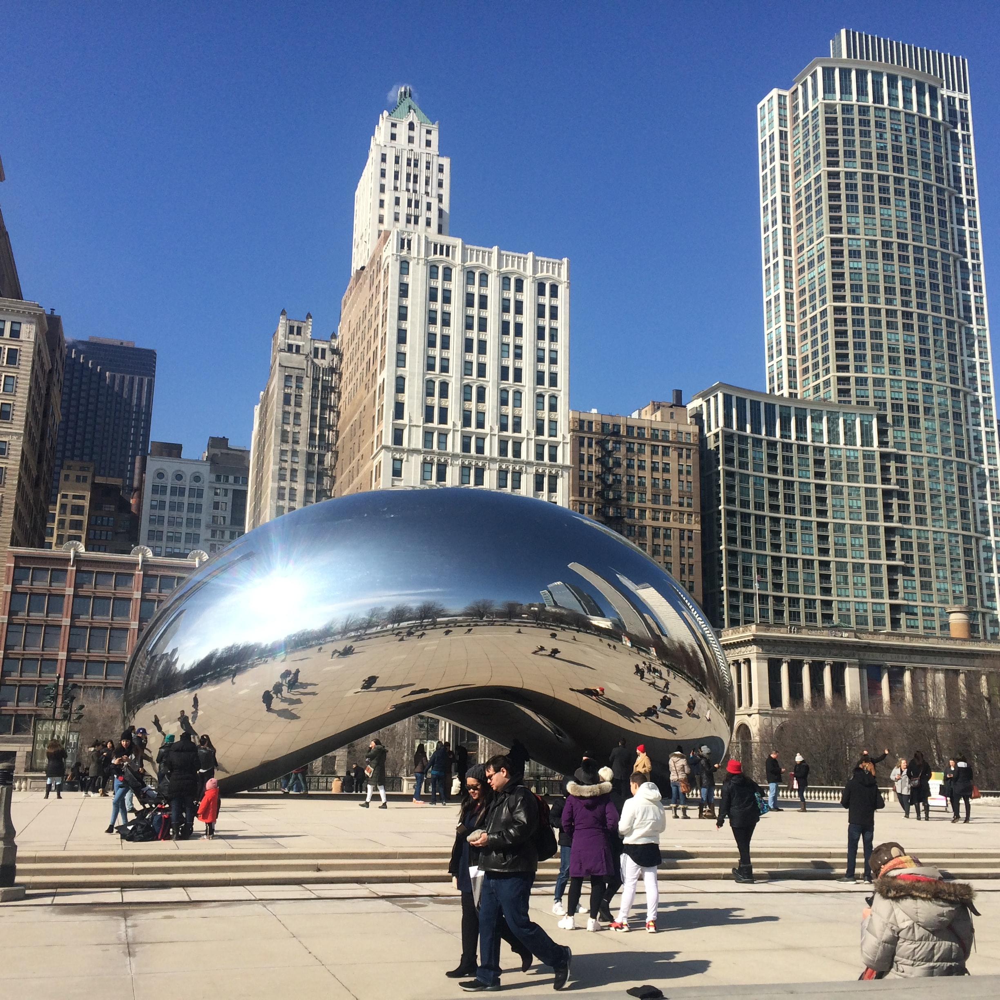

|
Machu PicchuSitio arqueológico inca más sobresaliente debido a su creativo diseño urbano, la belleza de su arquitectura y el fino trabajo en piedra de sus construcciones. En su planificación se aprovechó notablemente la topografía de la cima de la montaña a la que transformó en una imponente llaqta. |

|
ParísEs la capital de Francia, es una importante ciudad europea y un centro mundial del arte, la moda, la gastronomía y la cultura. Su paisaje urbano del siglo XIX está entrecruzado por amplios bulevares y el río Sena. Aparte de estos hitos, como la Torre Eiffel y la catedral gótica de Notre Dame del siglo XII, la ciudad es famosa por su cultura del café y las tiendas de moda de diseñador a lo largo de la calle Rue du Faubourg Saint-Honoré. |
|  |
ChicagoSe encuentra entre las ciudades más grandes de los EE.UU. Es famosa por su arquitectura atrevida y tiene un perfil en el que destacan rascacielos como el icónico Centro John Hancock, la torre Willis de 1,451 pies (antigua torre Sears) y Tribune Tower de estilo neogótico. La ciudad también es famosa por sus museos, incluido el Instituto de Arte de Chicago con sus famosas obras impresionistas y posimpresionistas. |